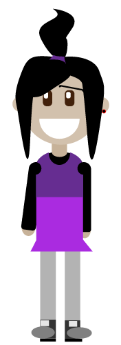

Rachel's Portfolio Page
You can access the other pages from here
Work from Intro to New Media
- Here is a link to Fixing an Old Image
- Here is a link to the Absurd Poem
- Here is a link to Self Portrait on Illustrator
- Here is a link to Poster
- Here is a link to Kirby's Strange Day
- Here is a link to a GIF of Kirby
- Here is a link to a small piece of animation
Work from Animation Class
- Here is a link to images made on Blender
- Here is a link to Still Life made in Blender
- Here is a link to three GIFs made in Blender and Photoshop
- Here is a link to the Weird Machine Animation
- Here is a link to the Wonderland Animation
- Here is a link to the Dynamic Design Webpage